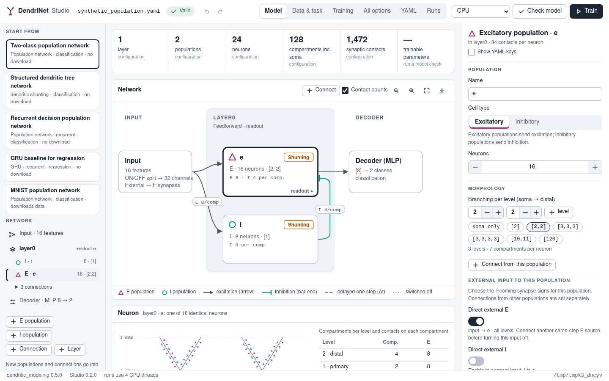
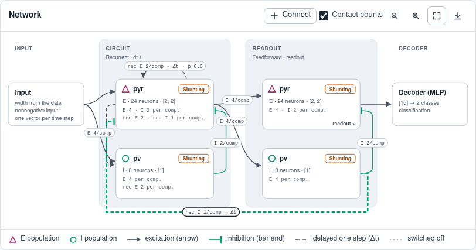
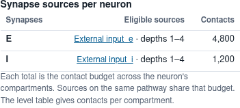
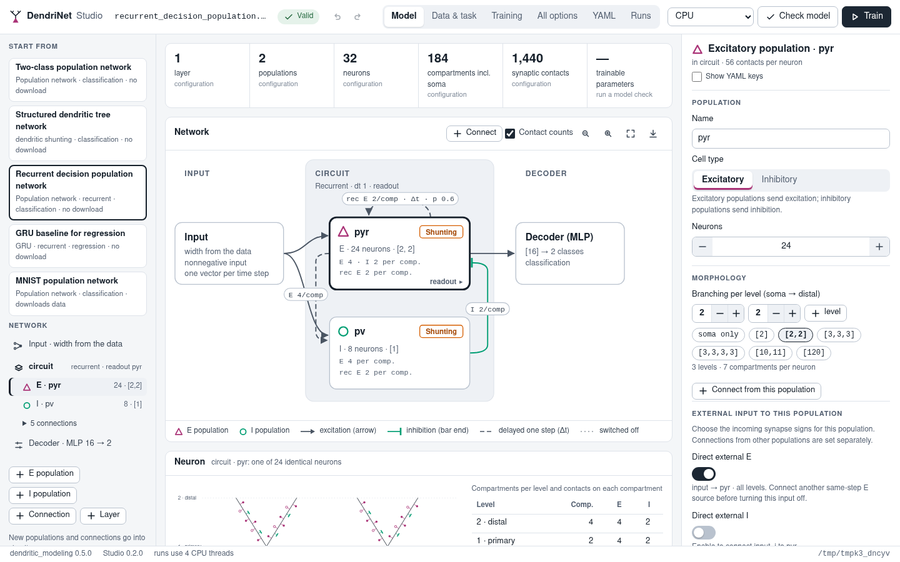
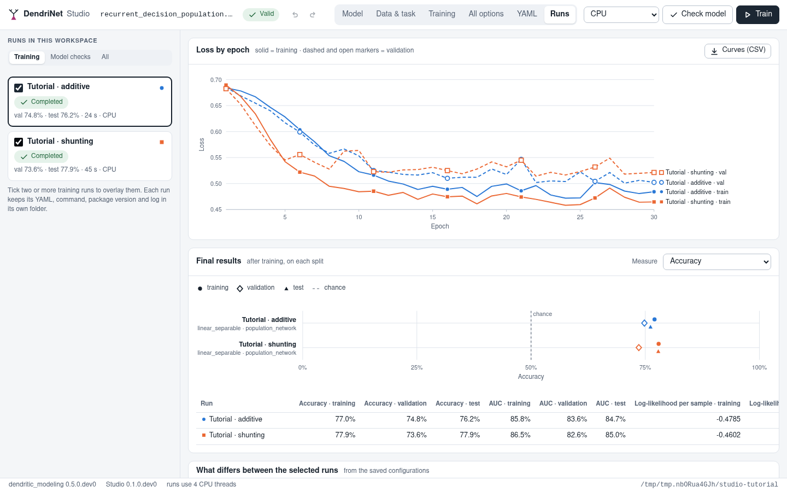

DendriNet Studio
DendriNet Studio lets you draw a network, inspect the inputs to a neuron, train the model and compare runs in a browser. The editor and the command line use the same experiment YAML and the same DendriNet model builders and trainer. You can move a design between them at any point.
Try it online. Open DendriNet Studio 0.2.0
to start a personal CPU session in your browser. Binder builds the environment
on the first visit to a new revision. Once the editor opens, the two-class
example is ready. Set Training → Epochs to 1, then choose Train.
The example generates its own data.
Use YAML → Export to save the configuration. In Runs, select your completed run and choose Curves (CSV) to save the training and validation history. Binder reclaims idle sessions and their workspace. For longer runs and persistent results, follow the local installation instructions below. The online link uses the Studio release tag, so each visitor starts with the same software and tutorial. Before the tag is available, the Try it link in PR #404 opens the review version.


The Model view of the two-class tutorial. Excitatory populations are triangles and send arrows; inhibitory populations are circles and send bars. The neuron below the network is the selected population’s exact compartment tree with its contacts per compartment.
Install and start
In a fresh Python 3.10 or later environment on your computer, install Studio from PyPI. Pip installs the compatible core library and PyTorch.
python -m pip install --upgrade dendrinet-studio
dendrinet-studio --workspace my-runs
For an editable install, run python -m pip install -e . -e ./apps/studio
from the repository root. See Installation for environment setup.
The command opens the local app and prints its address. If the tab fails to
open, paste the whole printed address into a browser on the same computer,
including its port and the session token after #. Keep the command running
while you work. Ctrl+C stops the server and its workers. Training takes place
on the computer running the command. A local installation works offline after
its dependencies and any required datasets have been downloaded.
Option |
Meaning |
|---|---|
|
Folder for run records and results (default |
|
Local port (default 8765; the next free port when it is taken; 0 picks any free port). |
|
CPU threads per run (default: up to 4, depending on the computer). |
|
Print the address without opening a browser, for remote machines. |
|
Design and export only: Studio never builds or trains a model on this
machine (also set by |
|
Also accept requests addressed to |
Train on a cluster GPU
Studio trains on the machine where you start the server. To use a cluster GPU, start Studio inside a GPU allocation and open the editor from your browser. The public Binder demo runs on a CPU.
1. Open a terminal on an allocated GPU node. If you already have a GPU session, use its terminal. Otherwise, choose one of these routes.
Browser only. In Open OnDemand, choose Interactive Apps → Remote Desktop and request one GPU on your lab’s partition and account. For a small example, four CPU cores, 16 GB of host memory and one hour are sufficient. Launch the desktop and open a terminal inside it. On Harvard’s Cannon cluster, connect to the FASRC VPN first. The
kempner_interactivepartition provides 20 GB A100 slices. See the FASRC Remote Desktop guide and the Kempner partition guide.Slurm terminal. From a login shell, run the following command with your GPU partition and billing account in place of
PARTITIONandACCOUNT. Once the allocation starts,hostnamegives you the compute node to use for port forwarding.srun --partition=PARTITION --account=ACCOUNT --nodes=1 --ntasks=1 \ --gres=gpu:1 --cpus-per-task=4 --mem=16G --time=01:00:00 --pty bash -l
2. Start Studio on the compute node. Activate a Python environment with a CUDA-enabled PyTorch build (see Installation). Install Studio once in that environment. From a writable shared directory where you want to keep your runs, check that PyTorch can see the allocated device, then start Studio.
python -m pip install dendrinet-studio
python -c "import torch; print(torch.cuda.get_device_name(0))" && \
dendrinet-studio --no-browser --threads 4 --workspace "$PWD/studio-runs"
If the check fails, verify the GPU allocation and the PyTorch installation in that shell. Keep the Studio process running while you use the editor.
3. Open the editor. Use the full printed URL, including the session
token after #.
Open OnDemand. Paste the URL into the browser inside the remote desktop. This route needs no SSH tunnel.
Cursor or VS Code. Connect the editor’s remote window to the allocated compute node. In the Ports panel, choose Forward a Port and enter Studio’s printed port. Open the forwarded local address in your laptop browser and append the printed
#and token. If the editor assigned a different local port, use the one shown in Ports.SSH. From your laptop, the example below forwards port 8765 through a login host to Studio on the compute host. Substitute your SSH username, the two hostnames and the port Studio printed. Then open that URL in your laptop browser. For a directly accessible workstation, omit
-J user@login-hostand use the workstation as the destination.ssh -N -o ExitOnForwardFailure=yes -J user@login-host \ -L 127.0.0.1:8765:127.0.0.1:8765 user@compute-host
4. Train and verify the device. Choose GPU if available beside
Train. Studio uses CPU by default, and a GPU request also falls back to
CPU if PyTorch cannot see CUDA. After training, open model_resources.json
under the run’s results directory. A GPU run records runtime_device
as cuda and gives the GPU model in cuda_device_name. The
device field in studio_run.json records the requested mode
(auto or cpu). You can select CPU for the next run in the same
session. Stop Studio with Ctrl+C and end the allocation when you finish.
Train your first network
In Model, open the two-class population example under Start from (
synthetic_population.yaml). It generates its own data. Select populatione. Its 16 excitatory neurons each have two branches leaving the soma and two children per branch. The eight inhibitory neurons in populationireceive excitation from the input and supply inhibition toe.Select CPU, then Check model. When the worker finishes, open its entry under Runs → Model checks. The model check reports trainable parameters, active synapses and candidate connections. Editing the design and checking it again creates a separate record.
Under Training, set Epochs to 1 for a quick test. Choose Train, name the run and select Start training. In Runs, open the finished training entry to inspect its loss, available evaluation measures and log.
For a comparison, change the epoch count, keeping the seed and network fixed, and train a second time. Select the two runs using their checkboxes. The comparison shows both learning curves and the settings that differ.
In YAML, choose Export to save the design. If you save the file as
demo.yaml, you can run it in the same environment withdendritic-train demo.yaml. To get the original, unedited example directly, usedendritic-example synthetic_population --output original.yaml.
Connect populations and mix layer dynamics
The population editor in Studio 0.2.0 can put feedforward and recurrent layers in the same design. E and I identify the sign of a population’s outgoing synapses. Timing identifies which source activity its target uses.
Open the Recurrent decision population network example in Model. Choose Layer, name the new layer
readout, choose Feedforward, and select Add layer. The new populations receive the current output of the first layer. An explicitly selected decoder layer stays selected.Select the inhibitory population
readout.pvon the diagram. Choose Connect from this population, then selectcircuit.pyron the diagram. The editor proposes Delayed for this feedback path. Check the source, destination and inhibitory sign and choose Add connection. The same operation is available through Connect on the diagram toolbar, using menus for both populations.Expand connections under the receiving layer or select the line in the diagram to inspect the route. The inhibitory line ends in a bar. Dashes indicate a delayed route. The label gives its travel time in steps (Δt for one step, a range for times that differ by depth). Use Edit connection to rewire it or the inspector to set its probability and target depths. Synapse counts belong to the receiving population and are shared by sources on the same pathway. The editor asks for a positive budget when its eligible depths have zero contacts. On a depth-restricted route, this sets the budget only at the selected depths. When a biological model receives both signs from external input, choose matched afferent populations or separate channel groups in the editor.
Open YAML to see the route under
circuit.connections, with sourcereadout.pv, targetpyrandtiming: delayed. Choose Check model to construct it, or Train to run the sequence task.
Same step uses current activity. Its source may be the layer input, a population in an earlier layer, or a local population if the route keeps same-step wiring acyclic. Delayed uses an earlier population output, one update earlier by default. It supports self-connections, loops within a layer and feedback from a later layer. Adding one enables recurrence on the receiving layer. A recurrent layer can receive both kinds of input. A feedforward layer can supply delayed activity to another layer.
When copying a layer, Studio adds local inhibition only if the receiving E
population has eligible inhibitory contacts. You can add an inhibitory
route and set its budget later with Add input source. A layer that steps
through time requires autograd_credit_mode: exact for every population,
including settings inherited from layer defaults. Studio checks this before
it saves the design.
To combine excitation from two populations, select the receiving population
and choose Add input source. Choose Same step and select the source
by name. Repeat for the second source. For example, layer0.e and
layer0.e2 can both supply layer1.e with recurrence off.
Previous readout selects only the previous layer’s designated readout.
The neuron’s Synapse sources per neuron table lists the two named
sources together. A budget of four excitatory contacts per compartment
selects four across both source pools; the split can vary among compartments.
To connect at just one depth, select the connection, open Placement, turn off All levels of the target, and leave only the desired depth checked. Depth 0 is the soma. For a pathway with restricted target levels, each receiving depth with a positive contact count needs at least one enabled source with a positive connection probability. If changing a route would leave a depth without a source, Studio identifies the population, pathway and depth. Connect another source there first, or set the count to zero under Synapses per compartment → Set counts per level. Use one count for all levels restores the population’s uniform counts. You can then override an individual depth; Undo reverses the two edits separately.
Select a recurrent connection to see its source delay and the response
time constant (τ) at each depth it contacts. To edit those times, select
Edit receiving population, then Time constants. In the decision
example, the soma, primary branches and distal branches of circuit.pyr
have response times of 10, 20 and 40 model time units. Larger values
smooth the input over more time. Editing a row writes level_taus in
the core’s distal-to-soma order. Use base and ratio restores the
geometric progression. Learn one time constant per depth shows the
values that training starts from. For a uniform response time, use
Use base and ratio and set Ratio per outward depth to 1.
To change when a signal arrives, open Edit connection → Travel delay. Choose one whole number of steps for the projection, or select Set delay by depth. For example, enter 1 at the soma, 2 at the primary branches and 3 at the distal branches. A signal emitted on update 0 then arrives on updates 1, 2 and 3. Select the finished connection to see travel steps and response τ side by side. Each projection has its own travel settings; all projections into a receiving depth share its compartment time constant. If you add a dendritic depth, its explicit travel delay starts at one step. The layer’s Time step dt sets the target’s integration time per update. Use a sequence with enough updates for the longest delay. Signals in transit at the end of a sequence are retained when the core’s hidden state is carried into the next chunk.
Configurable travel delays are available in Studio 0.2.0 with DendriNet
0.6.x. Check the installed versions with
python -m pip show dendrinet-studio dendritic-modeling. See
Install and start for PyPI and source installation instructions.


The feedback circuit from the example above. Select a line or its entry in the receiving layer’s connection list to see its source and timing.
Trace excitation and inhibition into a neuron
Select a first-layer population in Model. Its polarity describes the synapses it sends. Synapse sources per neuron shows the inputs it receives. In the two-class tutorial, external excitation drives both populations. The excitatory neurons receive their inhibitory contacts from the local inhibitory neurons. In a design with direct external inhibition, the table names the external inhibitory stream instead.
Desired input to the selected population |
Settings in External input to this population |
|---|---|
External excitation with inhibition supplied locally |
Enable Direct external E. Leave Direct external I off. Connect the local I population to the target and set its incoming I contact budget. |
Both signs supplied by the input |
Enable both switches and give both pathways contacts. For a biological model, choose Distinct E and I afferents with matched features or Separate groups of input channels under External afferents for the first layer. |
Only inhibition supplied by the external input |
Connect a same-step excitatory population first. Enable Direct external I and turn off Direct external E. Each target needs a same-step excitatory source. |
The switches edit connections to the selected target. The external afferent
choice applies to the whole first layer. In YAML, input or input_e
supplies excitation and input_i supplies inhibition. With transfer
enabled, input_source_identity: paired_afferents gives distinct E and I
afferents the same feature values. With independent_pathways: true, the
two streams read separate groups of channels. ON/OFF encoding
(input_transform: signed_split) is a separate choice about how to encode
feature values. In later layers, input refers to the preceding layer’s
readout. See Population networks for connection and transfer settings.
Under Synapses, set counts per compartment or use Set counts per level. Depth 0 is the soma. The level table gives the count on one compartment. The source table sums the budget over one neuron. Two sources on the same pathway share that budget. Enabling an additional source does not double it.


In the empirical CIFAR-10 example, 120 dendritic compartments each receive
40 E and 10 I contacts. The corresponding totals are 4,800 and 1,200 per
neuron. Both external populations carry matched features. To inspect this
design from the repository, import
projects/empirical/configs/cifar_primary_shunting.yaml in the YAML view.
The study’s README gives the library version used for its published runs.
For structured feedforward E/I cores, First-layer feedforward sources lists the routes fixed by the architecture. Local I cells, when present, supply the E cells’ inhibitory input. Without local I cells the first-layer E cells can receive the external I stream directly. Change counts under Connectivity, population sizes under Architecture, and external channel identity under Transfer.
What Studio supports
Model family |
How it is edited |
|---|---|
|
Visually: layers, excitatory and inhibitory populations, neuron counts, dendritic morphology (branching per level), contacts per compartment for each pathway (one count or one per level), contacts on the soma, the integration rule (shunting or the additive rules), leak, dendritic gates, initialization, time constants and every other population option; connections between populations with their timing (same step or delayed, including by depth), pathway, target levels, probability and seed. |
Structured dendritic trees ( |
Forms for the architecture, connectivity, morphology, transfer, sparsity, gate and implementation sections. |
Recurrent baselines ( |
Typed forms for the family’s options. |
Other built-in core types |
Forms where the library types the section; YAML for nested options. |


The recurrent decision example. Delayed connections (dashed, Δt) carry the previous time step’s activity, which makes the layer recurrent.
For every family Studio edits the task (classification or regression), the dataset and its options, the loss (only losses that suit the task are offered first), the learning strategy (standard backpropagation, recurrent training, the local learning rules and the staged strategies), the optimizer, learning rates per parameter group, the schedule, early stopping, initialization (synaptic weights, branch couplings and gates), seeds, regularization, pruning and evaluation measures. Values the forms do not show are kept: the All options view lists every option of the configuration with a search box, and the YAML view edits the file directly.
The installed examples cover each kind of model:
Example |
What it shows |
|---|---|
|
A feedforward E/I population network on a generated two-class task. It defaults to 30 epochs and runs locally without a dataset download. |
|
The same task with the structured dendritic tree family. |
|
A recurrent population network with delayed recurrent connections on a context-dependent evidence-integration task (classification over time). |
|
A GRU baseline on the adding problem, a regression task over a sequence. |
|
The tutorial’s network on MNIST digits; the first run downloads MNIST. |
|
The same EMNIST character has a different target under each of 32 cues. Two feedforward E/I layers receive the image and cue through the first layer. |
Export any of them without Studio with
dendritic-example <name> --output my_model.yaml.
Contextual remapping on EMNIST
In Model → Start from, choose Contextual remapping on EMNIST.
Each presentation has 784 image pixels and an uncorrupted one-hot cue.
Gain and noise vary across presentations. The target is
(character class + cue index) % 47. For example, the same class-10
character has target 10 with cue 0 and target 11 with cue 1.
Select the excitatory population e in the second layer to trace its inputs. It receives excitation from the first layer’s e population and inhibition from both the first layer’s i and its own layer’s i. Both first-layer populations receive the external image and cue. Choose CPU, then Check model or Train. The first build or run downloads the EMNIST archive (about 536 MiB compressed) to the shared data cache. With EMNIST Balanced already cached, the template also runs offline.
The short run demonstrates wiring and training. It uses 48 excitatory and 18 inhibitory neurons per layer, fixed leak and three epochs of 1,024 freshly sampled presentations. Its trainable branch gates start from the slope and offset given in the YAML. For the paper’s Figure 7 settings, the empirical project provides the full shunting and additive configurations, the training-stream gate calibration and the library version used for those experiments. Use YAML → Import to explore either full-size network in Studio.
Working in Studio
The tabs at the top hold the views of one design. Check model and Train work on the design as it is; the status next to the file name says whether DendriNet accepts it (a word and an icon, never a colour alone).
Model. Pick an example on the left or keep editing the current design. Select a population, a connection (click its line or its label) or a layer lane to edit it on the right. A tag such as layer default marks values that come from a default; reset removes a setting so the default applies again. To extend a population network:
Select the receiving layer and choose E population or I population. Set the neuron count and the branching factors from the soma outward. For example,
[2, 2]gives two proximal and four distal compartments per cell. The soma only preset gives a point neuron. Use Contacts on the soma when the design calls for direct somatic input.Use Connection to choose a source and target. Set whether the connection carries current or delayed activity and which target depths receive it. Use Synapses on the receiving population for the corresponding feedforward or recurrent E or I contact count.
Use Layer to extend the stack. Select a layer to choose its readout population. The next layer receives that population’s output. Select the network to choose which layer supplies the decoder.
An invalid edit is reported and the drawing keeps the last valid preview. If a depth has contacts but no source, select its connection and include that depth in Placement, add a source with Connection, or set the receiving count to zero. The connection editor reads the current draft’s endpoints and budgets. You can also remove a population or layer containing an invalid setting. Studio checks the entire proposed design before saving a repair. Undo restores the previous draft, including the setting you removed. Check model, Train, Export and Copy wait for pending connection edits. If an edit is rejected, Studio shows the reason so you can correct it before trying the action again. Editing a disabled or zero-probability route preserves the contact budget it shares with other sources. Small neurons are drawn in full when their branches fit. For large trees, the neuron view draws representative branches and labels how many children each represents. The caption gives the number drawn and the total, including the soma. The adjacent table covers every configured depth. Use undo and redo (Ctrl+Z, Ctrl+Shift+Z) to revisit a design, and Show YAML keys to see what a field writes. The diagram can be zoomed, fitted to the panel and exported as SVG.
Data & task. The task, the number of classes or outputs, the loss, the dataset (grouped into generated data, sequence tasks and image datasets that download once into the data cache) and its options, splits, seeds and evaluation measures.
Training. The learning strategy and its options, the schedule, the optimizer and the learning rate of each parameter group, initialization and seeds, dendritic gate calibration, regularization and pruning, and data loading and precision settings. For population networks, initialization settings apply to every layer; a layer or population can still override them.
All options. Every section of the configuration with a search box.
YAML. Edit the design and choose Apply (Ctrl+Enter). The strict
loader checks it before replacing the current design. If you continue typing
during validation, choose Apply again to use the latest text. Restoring
an unsaved design keeps its browser draft available across reloads. Syntax errors include
the line when the parser can identify it. Import opens a standalone
experiment. Export and Copy use the current design, even immediately
after Undo or Redo. If the editor contains unapplied changes, both use the text
exactly as written. The generated YAML preserves configuration values,
including options without a graphical control. Applying a file regenerates
its formatting and omits its comments. For a sweep, use
dendritic-sweep --config my_sweep.yaml --generate-only and import one
generated experiment. For a file that uses extends, open an already
composed experiment with its parent settings included. See Composing configs with extends
and Parameter sweeps.
Runs. Every model check and training run in the workspace. Running trainings show their progress. Select up to eight training runs to overlay their loss curves. Each run has its own marker shape and a text label. The view compares final measures in a dot plot and a table and lists settings that differ. Select a run to see its status, timing, model size, command, folder, notes and worker log. Open in editor loads its configuration back into the design. The curves can be exported as CSV.


Two runs of the tutorial compared in the Runs view.
Model checks, previews and runs
The preview that redraws the design after every edit validates the configuration and resolves the population graph; it does not build weights, download data or touch a random stream. A population card shows the contact budget for each input stream. When several connections supply the same stream, the card labels their combined budget as shared. The connections show their polarity and any target-level restrictions. Checking the model reports the active contact count after construction.
Check model builds the network in a separate process with the dataset’s input shape and the configured seeds, and reports trainable parameters, active synapses and candidate slots, before gate calibration. The selected dataset is prepared first, so a check of an image dataset may download it.
Train calls the same Python entry point as dendritic-train. The
device selector offers CPU or GPU if available. One check or training
worker runs at a time. Studio writes each run in its own workspace folder.
For instance, a training run with the tutorial defaults produces:
my-runs/20261118-142713-1f56b0/
config.yaml # the design as submitted
studio_run.json # config hash, command, device, threads, core path and version
worker.log # everything the worker printed
results/model_*/ # the library's normal run outputs and records
Studio passes --output_dir <run-folder>/results --run_name model to the
trainer. The name entered in the browser labels the Studio record. Use the
saved command, working directory and device settings to reproduce the
launch. Set an absolute data.base_dir when several runs should share a
local dataset. For a check, the resource counts live in resources.json.
For training, see Runs and outputs for the trainer’s configuration,
seeds, metrics and environment records.
A run is reported as completed only when its worker exits successfully. A run
that was active when Studio stopped is shown as unknown, never as completed.
Studio runs one process on this machine; distributed training and cluster
submission stay with dendritic-train, torchrun and dendritic-sweep,
which read the exported YAML.
Troubleshooting
Browser says the site cannot be reached. Confirm the command is still running and use its printed port. A browser on another computer needs a connection to that host (see Train on a cluster GPU). If the page opens but cannot reach the local service, reopen the complete URL with its current token.
The diagram looks valid but Check model fails. The live preview validates the configuration. The check also constructs the model with a sample from the configured dataset. Open Runs → Model checks, select the failed check and read Worker log for the loader or constructor error.
The controls for starting a run are missing or disabled. A design only label means the server was launched with execution disabled. With execution enabled, clear any field error and finish or stop the current worker.
Privacy and security
Studio listens on the loopback interface only. Its programming interface requires the session token and an accepted host name. Treat the printed URL as private. The browser interface loads its assets locally and has no telemetry. A dataset loader can contact its data provider when a configured dataset needs downloading. The server and its workspace are intended for one user.
Accessibility
Meaning never rests on colour alone: excitatory and inhibitory populations differ by shape (triangle, circle) and by line ends (arrow, bar), delayed connections are dashed, statuses carry an icon and a word, and every run in a comparison has its own marker shape and a text label. Alt+1 to Alt+6 switch views. Use the labelled population and connection buttons in the outline to select elements with the keyboard. Light and dark themes follow the operating system.
For developers
Studio lives in apps/studio of the DendriNet repository and is built as
its own wheel. The server (dendrinet_studio.server) is the Python
standard library’s HTTP server; the client is plain HTML, CSS and JavaScript
modules with no build step and no external requests.
Module |
Role |
|---|---|
|
Describes every configuration section, option, type, default and allowed value, read from the library’s dataclasses and registries. |
|
Validates a configuration with the library’s strict loader and describes it for the editor (population graph, per-level contacts). |
|
Starts, stops and records worker processes and reads their results. |
|
The model check: builds the model as the trainer does and writes its resource counts. |
|
The client: |
Run the tests on a workstation or compute node:
PYTHONPATH=src:apps/studio/src python -m pytest apps/studio/tests -m "not slow"
PYTHONPATH=src:apps/studio/src python -m pytest apps/studio/tests
The slow tests build and train small models, and the browser tests drive
Chromium through Playwright (pip install -e "apps/studio[test]" and
python -m playwright install chromium); they are skipped when Playwright
is missing. Set STUDIO_BROWSER_ARTIFACTS=<folder> to keep their
screenshots.